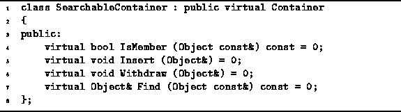

Data Structures and Algorithms
with Object-Oriented Design Patterns in C++
Data Structures and Algorithms
with Object-Oriented Design Patterns in C++A searchable container is an extension of the container abstraction. It adds to the interface provided for containers functions for putting objects in and taking objects out, for testing whether a given object is in the container, and a routine to search the container for a given object.
The declaration of the SearchableContainer class is
shown in Program  .
The SearchableContainer class is an abstract class
derived from the abstract base class Container.
It adds four more pure virtual member functions
to the inherited abstract interface.
.
The SearchableContainer class is an abstract class
derived from the abstract base class Container.
It adds four more pure virtual member functions
to the inherited abstract interface.

Program: SearchableContainer Class Definition
The IsMember function is a Boolean-valued function which takes as its lone argument a const reference to Object. The purpose of this routine is to test whether the given object instance is in the container. In effect, the routine searches the container for a pointer to the given object.
The purpose of the Insert member function is to put an object into the container. The Insert function takes as its argument a reference to Object. Remember, we have chosen to implement containers using indirect containment. In addition, it depends on the ownership status of the container whether it will delete the objects it contains.
The Withdraw function is used to remove an object from a container. The lone argument is a reference to the object to be removed. After an object has been removed from a container, the container no longer owns that object. In any event, the container never deletes an object which is removed from the container.
The final member function, Find, is used to locate an object in a container and to return a reference to that object. In this case, it is understood that the search is to be done using the object comparison functions. I.e., the routine is not to be implemented as a search of the container for a pointer to the given object but rather as a search of the container for an object which compares equal to the given object.
There is an important subtlety in the semantics of Find. The search is not for the given object, but rather for an object which compares equal to the given object. These semantics are particularly useful when using associations. Recall that two associations will compare equal if their keys compare equal--the values may be different.
In the event that the Find function fails to find an object equal to the specified object, then it will return a reference to the NullObject instance. Therefore, the user of the Find function should test whether the object which is returned is the NullObject instance by calling the IsNull() member function.
The Find function does not remove the object it finds from the container. Therefore, a container which owns its contained objects retains ownership of the result of the search. An explicit call of the Withdraw function is needed to actually remove the object from the container.
 Copyright © 1997 by Bruno R. Preiss, P.Eng. All rights reserved.
Copyright © 1997 by Bruno R. Preiss, P.Eng. All rights reserved.